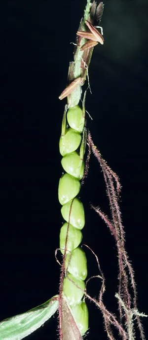
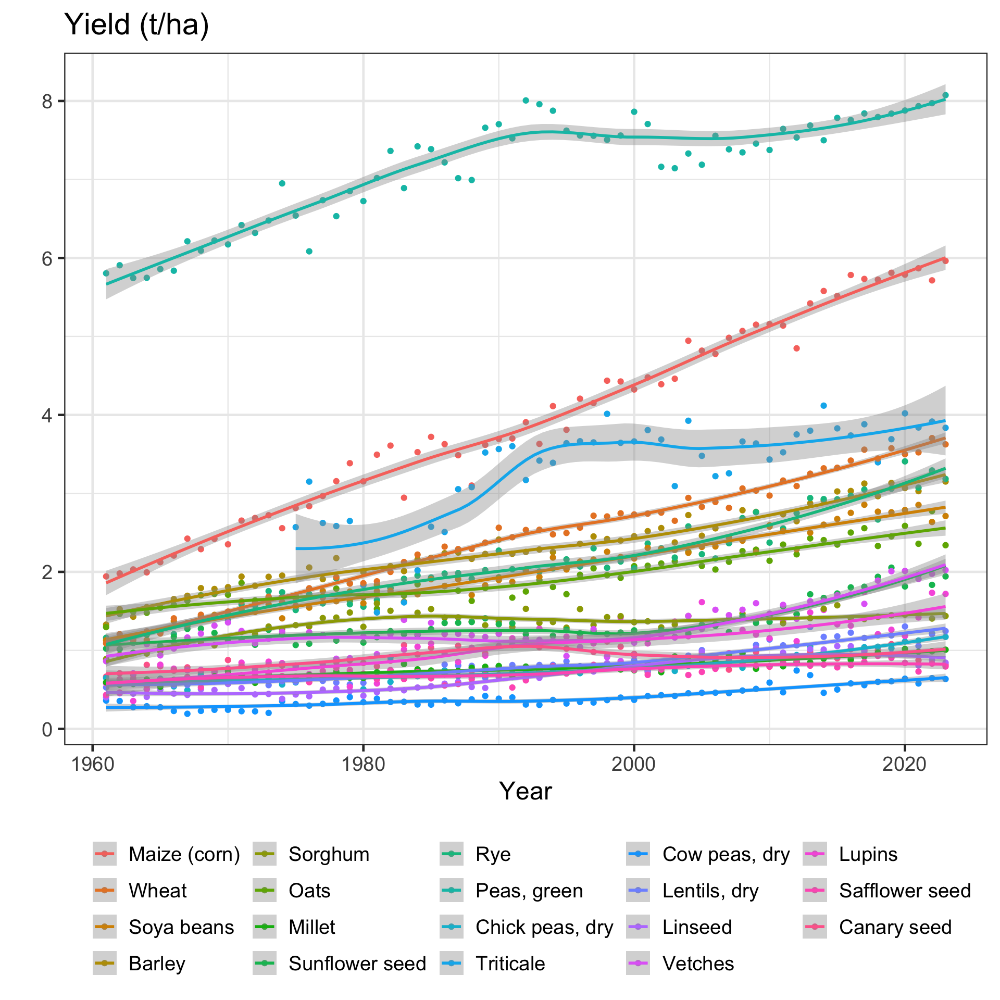
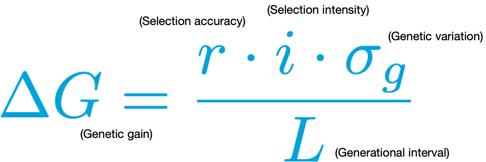

Short introduction to
selective breeding
2025-07-09
Wild vs Cultivated
Wild vs Cultivated
What is this?

Evolution of corn (maize)
Why do selective breeding?


Yield = Production / Area Harvested

Aim of selective breeding in a nutshell
🎯 Increase genetic gain
- Genetic gain measures improvement in the average genotype performance of a population over time due to selection for specific traits.
